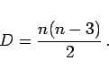

Eine geschlossene ebene Figure mit geradlinigen Begrenzungsstrecken, den Seiten, heißt Vieleck oder Polygon. Ein Vieleck mit n Seiten läßt sich in n-2 Teildreiecke zerlegen.
Die Summe der Außenwinkel , der Innenwinkel  und die Anzahl D der Diagonalen betragen
und die Anzahl D der Diagonalen betragen
| (3.47) |
| (3.48) |
|  | (3.49) |